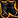
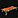
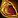
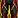
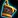
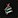
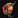
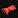
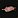
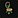

This guide covers all of Midnight Leatherworking. You'll find every weekly and one-time Knowledge source, profession equipment, renown-gated recipes, and full recipe lists for leather and mail armor, embellishments, leg armors, drums, reagents, and House Decor.
Midnight Leatherworking Changes
If you already played The War Within, here's what changed. Most of the system is the same, so you won't have trouble adapting.
- Artisan Leatherworker's Moxie - The BoP currency
 Artisan's Acuity that you got from earning profession Knowledge in The War Within has been changed to a profession-specific currency,
Artisan's Acuity that you got from earning profession Knowledge in The War Within has been changed to a profession-specific currency,  Artisan Leatherworker's Moxie. You can now only use it for Leatherworking-specific recipes.
Artisan Leatherworker's Moxie. You can now only use it for Leatherworking-specific recipes. - No More Bronze Quality Reagents - Bronze-quality reagents and consumables have been removed in Midnight. All reagents and consumables now only have two quality levels: Silver and Gold. This means you will always get at least a Silver-quality item, and you can use your Concentration right away to craft Gold-quality items. Weapons, armor, and profession equipment still have 5 ranks.
- Epic Profession Tools - New Epic-quality profession tools are available. They give the same Skill as Rare tools, but have higher secondary stats like Resourcefulness, Multicraft, and Ingenuity.
- Fewer Crafting Reagents - In The War Within, you needed multiple elemental leather types as crafting reagents. Midnight simplifies this down to one leather type, so your material list is much shorter.
Weekly Leatherworking Knowledge in Midnight
In Midnight, there are four weekly sources of profession Knowledge, giving you ~31 Knowledge Points per week. But this is only an estimate, because Patron Orders require crafting specific items at high quality, so your actual weekly total will be lower if you don't have the recipe or can't hit the quality target.
| Source | Details |
|---|---|
| Patron Crafting Orders (~24 KP) | You earn the majority of your weekly Knowledge Points by completing Patron Crafting Orders. You will receive |
| Weekly Quest (2 KP) | Your profession trainer will offer a weekly quest that asks you to complete 3 Crafting Orders. This rewards a |
| Weekly Drops (4 KP) | Each week, you can loot 1 of each of the following items from treasures scattered around the new zones: Thalassian Mana Oil and Amani Tanning Oil. |
| Inscription Treatise (1 KP) | To get a |
| Darkmoon Faire (3 KP / month) | Once a month, the Darkmoon Faire comes to town and you can complete a quick profession quest for +3 Knowledge Points and +2 Profession Skill. It's not a weekly source, but don't skip it. The Faire starts on the Sunday before the first Monday of each month. |
| Catch-up System | If you fall behind or start late, you will receive |
One-Time Leatherworking Knowledge in Midnight
Here is every one-time source of Leatherworking Knowledge in the Midnight expansion. These treasures are the fastest way to get Knowledge Points for your profession specialization, so you should collect them as soon as possible. Each treasure is a one-time pickup per character.
Renown Knowledge Book
Whisper of the Loa: Leatherworking is sold by the Amani Tribe Renown Quartermaster Magovu in Zul'Aman.
Compared to The War Within, there is only one profession Knowledge book you can unlock with renown in Midnight, and there are no hidden vendors.
Midnight Leatherworking Treasures
There are 8 Leatherworking treasures in Midnight. Collecting them provides 24 Knowledge Points in total. They are located in Silvermoon City, Zul'Aman, Harandar and Voidstorm.
| Treasure | Zone | Map |
|---|---|---|
| Artisan's Considered Order | Silvermoon City | |
| Bundle of Tanner's Trinkets | Zul'Aman, Atal'Aman | |
| Amani Leatherworker's Tool | Zul'Aman | |
| Prestigiously Racked Hide | Zul'Aman | |
| Ethereal Leatherworking Knife | Voidstorm | |
| Haranir Leatherworking Mallet | Harandar | |
| Haranir Leatherworking Knife | Harandar | |
| Patterns: Beyond the Void | Voidstorm |
TomTom Waypoints & Treasure Check Macro
TomTom Waypoints
/ttpaste in-game/way #2393 44.8, 56.2 Artisan's Considered Order /way #2536 45.4, 45.5 Bundle of Tanner's Trinkets /way #2437 33.1, 78.9 Amani Leatherworker's Tool /way #2437 30.8, 84.0 Prestigiously Racked Hide /way #2405 34.7, 57.0 Ethereal Leatherworking Knife /way #2413 51.7, 51.3 Haranir Leatherworking Mallet /way #2413 36.1, 25.2 Haranir Leatherworking Knife /way #2444 53.7, 51.7 Patterns: Beyond the Void
Treasure Check Macro
true = collectedLeatherworking Specializations
There are four specialization trees available. You will unlock access to them at Leatherworking skill levels 25, 50, 60, and 75.
- Lasting Leather - Leather armor recipes.
- Safeguarding Scales - Mail armor recipes.
- Flawless Fortes - Armor kits, profession gear for other crafters, and optional reagents.
- Learned Leatherworker - Crafting stats.
I have a separate guide that walks through the best builds for each playstyle with step-by-step Knowledge Point allocation.
Midnight Leatherworking Specialization Guide & Best Builds
Profession Equipment
Epic profession tools are new in Midnight. In The War Within, professions only had Green and Rare tools. Epic tools give the same Skill as Rare, but have higher secondary stats like Resourcefulness, Multicraft, and Ingenuity.
Profession Gear for Leatherworkers
Leatherworkers can craft their own chest accessory, but you will need to get the knife and the toolset from a Blacksmith.
| Slot | Crafted By | Green Quality | Blue Quality | Epic Quality |
|---|---|---|---|---|
| Accessory | Leatherworking | |||
| Accessory | Blacksmithing | |||
| Tool | Blacksmithing |
Craftable Profession Equipment
Leatherworkers can craft profession equipment for Alchemy, Blacksmithing, Engineering, Herbalism, Jewelcrafting, Leatherworking, and Skinning.
Green Recipes
Green quality profession equipment is not soulbound, so you can craft and sell them on the Auction House. You learn these recipes from the profession trainer.
Blue and Purple Recipes
Recipes for the Blue and Epic quality equipment are sold by Zaralda in Silvermoon City for 150  Artisan Leatherworker's Moxie each. The crafted items are Soulbound, so you cannot sell them on the Auction House. You must use the Crafting Order system to craft them for other players.
Artisan Leatherworker's Moxie each. The crafted items are Soulbound, so you cannot sell them on the Auction House. You must use the Crafting Order system to craft them for other players.
Skill bonus: Both Epic and Blue profession gear provide the same Skill bonus. The Epic versions only offer higher secondary stats.
| Profession | Green Quality | Blue Quality | Epic Quality |
|---|---|---|---|
| Alchemy | |||
| Blacksmithing | |||
| Engineering | |||
| Herbalism | |||
| Jewelcrafting | |||
| Leatherworking | |||
| Skinning (Head) | |||
| Skinning (Back) |
Renown Recipes
Some Leatherworking recipes are sold by Renown vendors in each zone. You need to reach Renown Rank 5 with the corresponding faction before you can buy them.
| Recipe | Description | Faction | Vendor |
|---|---|---|---|
| +Crit armor kit | Amani Tribe (Rank 5) | Magovu | |
 World Tree Rootwraps |
Epic leather boots | Hara'ti (Rank 5) | Naynar |
 Simple Haranir Table |
House Decor | Hara'ti (Rank 5) | Naynar |
| +Vers armor kit | Silvermoon Court (Rank 5) | Caeris Fairdawn | |
| Row Walker's Deflectors | Epic leather bracers | Silvermoon Court (Rank 5) | Caeris Fairdawn |
Mail & Leather Armor
Here is the full list of new armor sets available in Midnight. Most of the Rare gear is learned from your trainer and is great for leveling. The high-end Epic pieces are locked behind Specializations, so you'll need to spend your Knowledge Points wisely to unlock the specific slot you want to craft.
Leather Armor
| Recipe | Slot | Source |
|---|---|---|
| Smuggler's Reinforced Hood | Head | Trainer (50) |
 Smuggler's Reinforced Shoulderguards |
Shoulder | Trainer (40) |
| Smuggler's Leather Tunic | Chest | Trainer (10) |
| Smuggler's Leather Wristbands | Wrist | Trainer (1) |
| Smuggler's Reinforced Gloves | Hands | Trainer (25) |
| Smuggler's Reinforced Binding | Waist | Trainer (20) |
 Smuggler's Reinforced Pants |
Legs | Trainer (45) |
| Smuggler's Leather Footpads | Feet | Trainer (5) |
| Recipe | Slot | Source |
|---|---|---|
| Silvermoon Agent's Cover | Head | Spec: Lasting Leather |
| Silvermoon Agent's Mantle | Shoulder | Spec: Lasting Leather |
| Silvermoon Agent's Coat | Chest | Spec: Lasting Leather |
| Silvermoon Agent's Deflectors | Wrist | Spec: Lasting Leather |
| Silvermoon Agent's Handwraps | Hands | Spec: Lasting Leather |
| Silvermoon Agent's Utility Belt | Waist | Spec: Lasting Leather |
| Silvermoon Agent's Leggings | Legs | Spec: Lasting Leather |
| Silvermoon Agent's Sneakers | Feet | Spec: Lasting Leather |
| Recipe | Slot | Source |
|---|---|---|
| Thalassian Competitor's Leather Mask | Head | Vendor: Mirvedon (Silvermoon City) |
| Thalassian Competitor's Leather Shoulderpads | Shoulder | Vendor: Mirvedon (Silvermoon City) |
| Thalassian Competitor's Leather Chestpiece | Chest | Vendor: Mirvedon (Silvermoon City) |
| Thalassian Competitor's Leather Wristwraps | Wrist | Vendor: Mirvedon (Silvermoon City) |
| Thalassian Competitor's Leather Gloves | Hands | Vendor: Mirvedon (Silvermoon City) |
| Thalassian Competitor's Leather Belt | Waist | Vendor: Mirvedon (Silvermoon City) |
| Thalassian Competitor's Leather Trousers | Legs | Vendor: Mirvedon (Silvermoon City) |
| Thalassian Competitor's Leather Boots | Feet | Vendor: Mirvedon (Silvermoon City) |
Mail Armor
| Recipe | Slot | Source |
|---|---|---|
| Scout's Polished Skullcap | Head | Trainer (50) |
| Scout's Polished Spaulders | Shoulder | Trainer (40) |
| Scout's Scaled Vest | Chest | Trainer (10) |
 Scout's Scaled Bracers |
Wrist | Trainer (1) |
| Scout's Polished Gauntlets | Hands | Trainer (25) |
| Scout's Polished Wrap | Waist | Trainer (20) |
| Scout's Polished Legguards | Legs | Trainer (45) |
| Scout's Scaled Boots | Feet | Trainer (5) |
| Recipe | Slot | Source |
|---|---|---|
| Farstrider's Unwavering Visage | Head | Spec: Safeguarding Scales |
| Farstrider's Brilliant Plumes | Shoulder | Spec: Safeguarding Scales |
| Farstrider's Scouting Vest | Chest | Spec: Safeguarding Scales |
| Farstrider's Plated Bracers | Wrist | Spec: Safeguarding Scales |
| Farstrider's Sharpened Claws | Hands | Spec: Safeguarding Scales |
| Farstrider's Trophy Belt | Waist | Spec: Safeguarding Scales |
| Farstrider's Reinforced Faulds | Legs | Spec: Safeguarding Scales |
| Farstrider's Razor Talons | Feet | Spec: Safeguarding Scales |
| Recipe | Slot | Source |
|---|---|---|
| Thalassian Competitor's Chain Cowl | Head | Vendor: Mirvedon (Silvermoon City) |
| Thalassian Competitor's Chain Epaulets | Shoulder | Vendor: Mirvedon (Silvermoon City) |
| Thalassian Competitor's Chain Tunic | Chest | Vendor: Mirvedon (Silvermoon City) |
| Thalassian Competitor's Chain Cuffs | Wrist | Vendor: Mirvedon (Silvermoon City) |
| Thalassian Competitor's Chain Grips | Hands | Vendor: Mirvedon (Silvermoon City) |
| Thalassian Competitor's Chain Girdle | Waist | Vendor: Mirvedon (Silvermoon City) |
| Thalassian Competitor's Chain Leggings | Legs | Vendor: Mirvedon (Silvermoon City) |
| Thalassian Competitor's Chain Stompers | Feet | Vendor: Mirvedon (Silvermoon City) |
Embellishments
Embellished gear comes with powerful unique effects, but remember you can only equip two at a time. You won't learn these recipes from your specialization tree. Instead, you have to find them as drops or buy them from vendors.
| Recipe | Source |
|---|---|
| Hexwoven Strand | Drop: Rak'tul (Maisara Caverns) |
| Row Walker's Deflectors | Vendor: Caeris Fairdawn (Eversong Woods) |
| Row Walker's Insurance | Drop: Lithiel Cinderfury (Murder Row) |
| Row Walker's Swiftgrips | Drop: Heavy Trunk (Delves) |
| World Tree Rootwraps | Vendor: Naynar (Harandar) |
| Axe-Flingin' Bands | Drop: Heavy Trunk (Delves) |
| Ranger-General's Grips | Drop: Restless Heart (Windrunner Spire) |
| World Tender's Barkclasp | Drop: Chimaerus (The Dreamrift) |
| World Tender's Rootslippers | Drop: Heavy Trunk (Delves) |
| World Tender's Trunkplate | Drop: Ziekket (The Blinding Vale) |
Leg Armors and Drums
Nothing fancy here, just the usual Armor Kits and Drums for Midnight.
| Recipe | Description | Source |
|---|---|---|
| Agility or Strength + Armor | Spec: Flawless Fortes | |
| Agility or Strength + Stamina | Vendor: Magovu (Zul'Aman) | |
| Cheaper version for leveling | Trainer (10) | |
| 15% Haste to party/raid | Trainer (50) |
Reagents & Optional Reagents
Reagents are more streamlined this expansion.  Scalewoven Hide is crafted using both types of rare leather. The
Scalewoven Hide is crafted using both types of rare leather. The  Infused Scalewoven Hide is a universal reagent that requires four different elemental types to craft, replacing the need for multiple element-specific hides.
Infused Scalewoven Hide is a universal reagent that requires four different elemental types to craft, replacing the need for multiple element-specific hides.
| Recipe | Source |
|---|---|
| Quest: The Medicine Loa's Shrine | |
| Spec: Flawless Fortes | |
| Drop: Ziekket (The Blinding Vale) | |
| Trainer (25) | |
| Trainer (25) | |
| Trainer (25) | |
| Trainer (25) |
House Decor
Player Housing is huge in Midnight, and Leatherworkers can craft a bunch of furniture for it. You can make rugs, beds, and other leather-themed items.
These are all cosmetic and BoE, so you can sell them on the Auction House.
| Recipe | Source |
|---|---|
| Embossed Sin'dorei Fur Rug | Trainer (80) |
 Leather-Bound Haranir Wall Shelf |
Trainer (80) |
 Haranir Canopy Bed |
Drop: Harandar Treasures |
 Plush Haranir Leather Pillow |
Drop: Heavy Trunk (Delves) |
| Simple Haranir Table | Vendor: Naynar (Harandar) |
 Stitched Haranir Rug |
Vendor: Zaralda (Silvermoon City) |
 Sturdy Haranir Chair |
Vendor: Zaralda (Silvermoon City) |